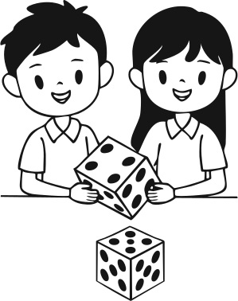

Step 1
Roll two dice, add them (e.g., 3 + 5 = 8) and use that as the second number in your multiplication sentence (2 × 8).
Roll two dice, add them (e.g., 3 + 5 = 8) and use that as the second number in your multiplication sentence (2 × 8).
Draw that number of circles (e.g., 8 circles).

Put two objects in each circle.

Count all the objects and write the full sentence (e.g., 2 × 8 = 16).
Play in groups.
Assign roles like rolling dice, drawing or placing bottle tops.
As students play, support them to reach the learning outcome. (See the PBL tips below.)
Mathematics: Focus on another times table.